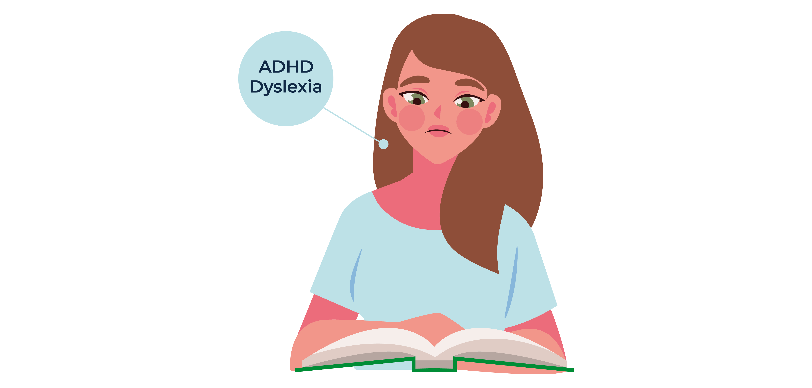
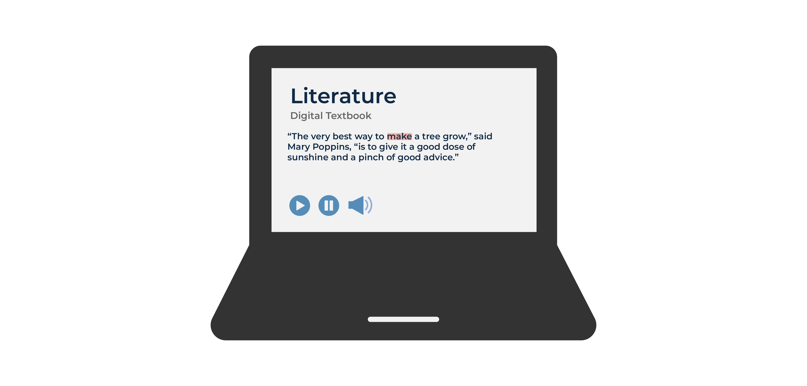
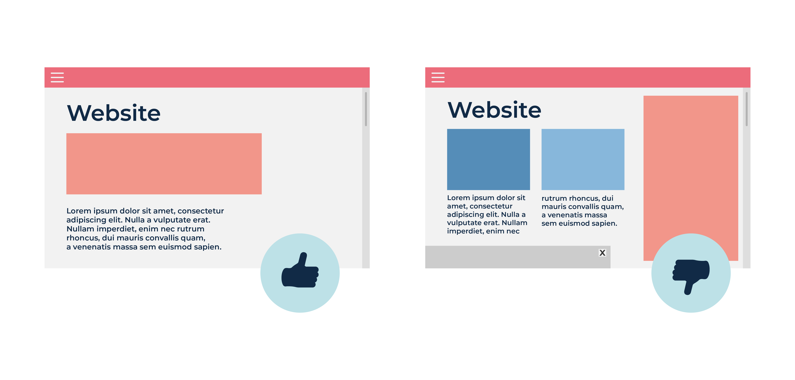
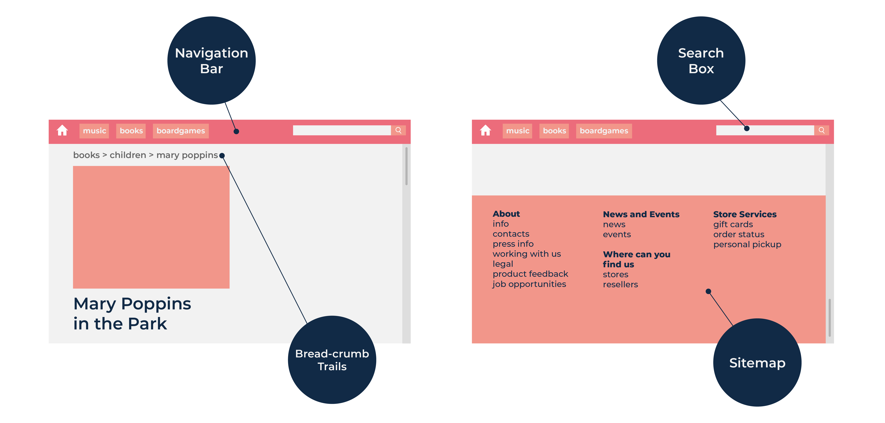
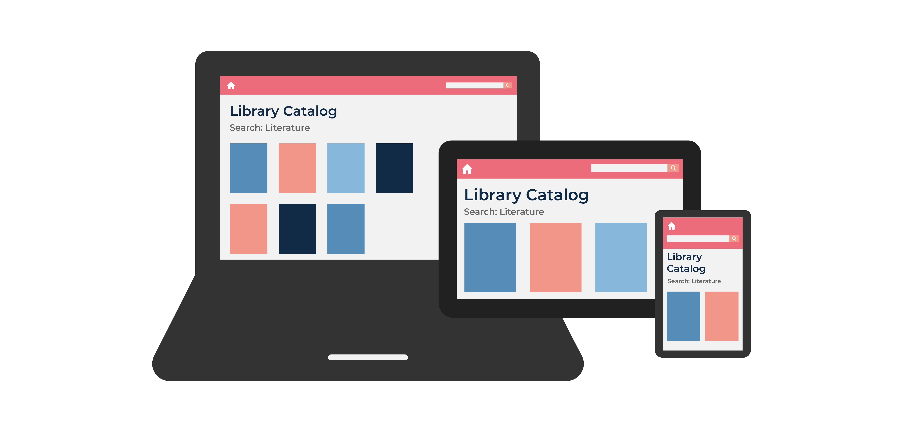
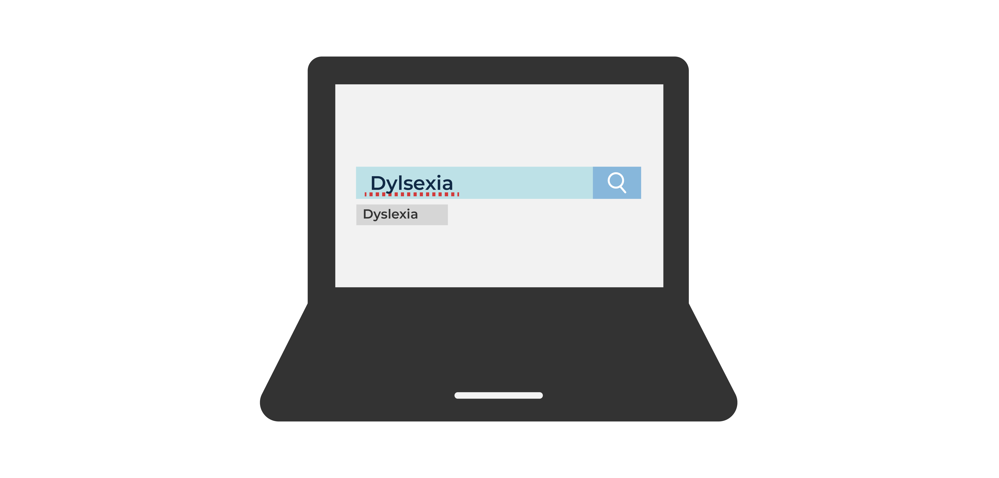

-
1/6
Preety is a middle school student with attention deficit hyperactivity disorder with dyslexia. She has difficulty reading, but she enjoys her literature class.
-
2/6
Her school started using online textbooks. She was initially worried about using this new format, but using text-to-speech software that highlights the text on the screen as it reads it aloud, she realized that she can focus on the content instead of struggling over every word.
-
3/6
The text-to-speech software helps with other online text; but, her experience with websites varies. Some sites use graphics in a way that helps her to focus on the content that she would like to read, while other sites have distracting advertisements and moving content.
-
4/6
She has problems with online content when the navigation is unclear, and prefers sites that have navigation cues including a navigation bar, search box, bread-crumb trails, and a sitemap.
-
5/6
Her school is using an accessible library catalog online. Before it she had to go to the library to find books. Now she can search the catalog using her phone, tablet, or laptop.
-
6/6
She struggles with spelling but the search feature that suggests alternative spellings and correct words is helpful.